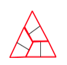
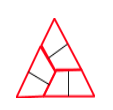

The Broken Tile
Lesson Overview

ST Math Game:
In Fraction of Shape, students enter the value of the numerator that represents the pieces colored in the visual model. The fraction animates to create the visual model used in the prompt. When correct the colored pieces fill in the shaded sections, when incorrect the mismatched pieces fall to the ground and block JiJi’s path. The use of unconventional partitions in this game (see above) and the accompanying animation provide an opportunity for students to visually identify different unit fractions to describe how the visual model can been partitioned equally.
Students will:
- Construct and describe equivalent ways to name a fraction of a given shape.
- Justify why their descriptions are correct and how the two fractions are equivalent.
- Reason from the whole to the parts (1 cut into 4 equal parts) and from the part to the whole (four of this shape <¼> makes the whole.)
Teachers will:
Task 1: Present ST Math puzzles:
Project a puzzle from level 3 that uses an equilateral triangle partitioned into sixths (trapezoids) or eighths (triangles). Ask students to solve the given puzzle and describe how the animation defines the role of a denominator and numerator in this context. Have students use available materials (see lesson below) to find equivalent ways to describe and justify what fraction of the shape is colored.
Task 2: Tangram problem:
After making tangrams with the students (see appendix B), challenge students to identify what fraction of the original square each piece represents. Cooperative groups work well with this task. (Option: read The Warlord’s Puzzleby Virginia Pilegard.) Compare different strategies for identifying the unit fraction represented by each tangram piece and how to prove they are labelled correctly.
Instructional Goals:
Common Core Content Standards
Develop understanding of fractions as numbers
3.NF.A.1 Understand a fraction 1/b as the quantity formed by 1 part when a whole is partitioned into b equal parts; understand a fraction a/b as the quantity formed by a parts of size 1/b.
3.NF.A.3 Explain equivalence of fractions in special cases, and compare fractions by reasoning about their size.
3.NF.A.3.A Understand two fractions as equivalent (equal) if they are the same size, or the same point on a number line.
3.NF.A.3.B Recognize and generate simple equivalent fractions, e.g., 1/2 = 2/4, 4/6 = 2/3. Explain why the fractions are equivalent, e.g., by using a visual fraction model.
4.NF.A.1 Explain why a fraction a/b is equivalent to a fraction (n × a)/(n × b) by using visual fraction models, with attention to how the number and size of the parts differ even though the two fractions themselves are the same size. Use this principle to recognize and generate equivalent fractions.
Standards for Mathematical Practice:
Practice Standard 1: Make sense of problems and persevere in solving them.
- Are these shapes all sevenths? Why or why not?
- How can you use what you know (this triangle is ¼ of the square) to figure out what fraction of the whole these other pieces are?
Practice Standard 3: Construct viable arguments and critique the reasoning of others.
- How can the parallelogram and the square both represent the same fraction of the square? Can you prove it?
- Do you agree or disagree with Sam’s reason why these are eighths? Why or why not?
Practice Standard 4: Model with mathematics.
- What tangram pieces are equivalent? How do you know? How can you prove they are equivalent?
Practice Standard 6: Attend to precision.
- What tangram pieces are equivalent? How do you know? How can you prove they are equivalent?
Practice Standard 7: Look for and make use of structure.
- How does knowing the value of the large triangles help you figure out the value of the smallest triangles?
Practice Standard 8: Look for and express regularity in repeated reasoning.
- If you only knew the value of one shape, which one would you choose to help you figure out the value of the rest of the shapes? What would the value of the starting shape be? Explain your thinking.
Fraction Schema:
Students develop a deeper understanding of unit fractions and equivalence using area models by working with a ‘whole’ that has been partitioned into areas of different, but related, sizes. They develop multiplicative reasoning to derive the fractional value of each shape by identifying equivalent relationships among different shapes, e.g. “If 2 medium triangles make a large triangle and 4 large triangles make the whole square, then it takes 8 medium triangles to make the whole square. That means the medium triangle must be ⅛ of the whole square.” Students construct an understanding of unit fractions and equivalence by composing and decomposing the ‘whole’ and it’s fractional parts. They compose the whole, e.g. “it takes four of this large triangles to make the whole, so it must be ¼ and since it takes 2 of this medium triangle to make a large, then it must be ⅛,l” and decompose it, “e.g. cutting the square into four equal triangles makes each of these triangles ¼.”
 
